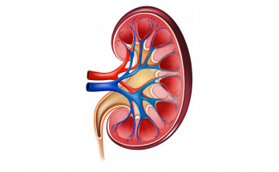
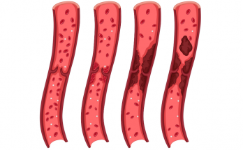

သွေးဆုံးချိန်မှာ ကြင်နာပါသွေးဆုံးချိန်မှာ ကြင်နာပါ သွေးဆုံးပြီး အမျိုးသမီးတစ်ယောက်ကို ဘာဖြစ်မှာ အကြောက်ဆုံးလဲလို့မေးရင် သူတို့က ရင်သားကင်ဆာ ဒါမှမဟုတ် အဆုတ်ကင်ဆာလို့ ဖြေပါလိမ့်မယ်။ ဒါပေမဲ့ အသက် ၅၀ ကျော် အမျိုးသမီးတွေကို အဓိက ခြိမ်းခြောက်နေတာကတော့ နှလုံးရောဂါပါပဲ။ အများအားဖြင့် ကိုယ့်ကိုယ်ကို အချိန်မရွေး ရုတ်တရက် နှလုံးဖောက်ပြန်တာ- Heart Attack ဖြစ်နိုင်ပါတယ်။ လေဖြတ်နိုင်တယ်ဆိုတာကို သိပ်မတွေးမိကြပါဘူး။ … |
အသက်ကြီးသော အမျိုးသားများ လိင်ပိုင်းဆိုင်ရာ စိတ်ဝင်စားမှု လျှော့နည်းလာခြင်းအသက်ကြီးလာတာနဲ့ အမျှ အမျိုးသားတွေဟာ လိင်ပိုင်းဆိုင်ရာ ကိစ္စတွေကို စိတ်ဝင်စားမှု လျှော့ကျလာတတ်ပါတယ်။ ဒါဟာ ဘာလို့ဖြစ်ရတာလဲ။ အများစုသော အပြောင်းအလဲတွေက အမျိုးသားဟော်မုန်း တက်စထရိုစတီရုန်း နည်းသွားလို့ ဖြစ်ရတာပါ။ ဘယ်လို လက္ခဏာတွေ ရှိလဲ လက္ခဏာတွေကတော့- သုတ်ကောင်အရည်အတွက် ကျဆင်းလာမှု လိင်တံထောင်မတ်ရန် အချိန်ကြာလာမှု ငယ်စဉ်ကလို လိင်တံမမာနိုင်မှု … |
သွေးဆုံံးချိန်လက္ခဏာများ သက်သာဖို့ နည်းလမ်း ၁၁ မျိုးအမျိုးသမီးတွေက အသက် ၄၀ ကျော် ၅၀ နား နီးလာရင် သွေးဆုံးတတ်ကြပါတယ်။ သွေးဆုံးတဲ့ လက္ခဏာတွေကို နှစ်အနည်းငယ်ကြာအောင်လည်း ခံစားရလေ့ရှိပါတယ်။ အမျိုးသမီးတွေရဲ့ ၃ ပုံ ၂ ပုံ က သွေးဆုံးချိန်မှာ – အသားတွေပူတာ၊ ညဘက်ချွေးထွက်များတာ၊ စိတ်အပြောင်းအလဲမြန်တာ၊ စိတ်တိုလွယ်တာ၊ နုန်းတာ … |
|  | ကျောက်ကပ်ကင်ဆာကို စောစောသိနိုင်ဖို့ လက္ခဏာ (၉) ချက်ကျောက်ကပ်ကင်ဆာဆိုတာ ဘာလဲ၊ ကနဦးပြတဲ့လက္ခဏာတွေကဘာလဲဆိုတာ သိရှိလိုသူများအတွက် ရေးသား ဖော်ပြပေးလိုက်ပါတယ်။ ကျောက်ကပ်ရဲ့ လုပ်ငန်းဆောင်တာက ဘာလဲ ကျွန်မတို့ ခန္ဓာကို်ယ်မှာ ပဲကြီးစေ့ပုံသဏ္ဍာန်ရှိတဲ့ ကျောက်ကပ်နှစ်ခု ရှိပါတယ်။ သူတို့က နံရိုးခွင်ရဲ့အောက်ဘက် ခါးဆစ်ရိုးတွေရဲ့ ဘေးတစ်ဘက်တစ်ချက်ဆီမှာ ရှိပါတယ်။ ကျောက်ကပ်ရဲ့လုပ်ငန်းဆောင်တာကတော့ ခန္ဓာကိုယ်တွင်းမှာ ရှိတဲ့ အညစ်အကြေးတွေကို ပြွန်လေးတွေက စစ်ထုတ်ပြီး … |
|  | သွေးကြောကျဉ်းမြောင်း ပိတ်ဆို့မှုကို သက်သာစေနိုင်သည့် အစားအစာ ၂၀သွေးကြောတွေဟာ အချိန်ကြာလာတာနဲ့ အမျှ တင်းမာလာပြီး ကျဉ်းမြောင်းပိတ်ဆို့ဖို့ လွယ်လာပါတယ်။ ဒီလို မဖြစ်အောင် သွေးကြောကျန်းမာရေးကို ငယ်ရွယ်စဉ်ကတည်းက ဂရုစိုက်သင့်ပါတယ်။ တချို့ အစားအစာတွေက သွေးကြောကျဉ်းမြောင်းပိတ်ဆို့မှုကို ကာကွယ်ပေးနိုင်ပြီး ကျဉ်းမြောင်းနေတဲ့ သွေးကြောတွေကို ပြန်လည်သက်သာ ကောင်းမွန်လာစေနိုင်ပါတယ်။ ၁။ ကွေကာအုပ် ကွေကာအုပ်မှာ ပျော်ဝင်နိုင်တဲ့ အမျှင်ဓာတ်များစွာ ပါဝင်ပါတယ်။ … |
အသက် ၅၀ ကျော် အမျိုးသမီးတိုင်း သိထားသင့်တဲ့ ကျန်းမာရေးလျှို့ဝှက်ချက်များကျွန်မတို့ အမျိုးသမီးတွေဟာ ဖြတ်သန်းခဲ့တဲ့ ဘဝတစ်လျှောက် ပျော်ရွှင်မယ်၊ ဝမ်းနည်းမယ်၊ ပူဆွေးမယ်၊ ဒေါသထွက်မယ် စတာတွေနဲ့ ပြည့်နှက်နေတဲ့အတွက် တစ်ခါတစ်ရံ ကျန်းမာရေးအကြောင်းကို ဆွေးနွေးပြီး အလေးထားဖို့ မေ့နေတတ်ပါတယ်။ ဒါကြောင့် အမျိုးသမီးတွေအတွက် အရင်တုန်းက မေ့ထားခဲ့တဲ့ ကျန်းမာရေးတွေအကြောင်း ဖော်ပြသွားပါမယ်။ နှလုံးရောဂါက ကြောက်စရာကောင်းတယ် အမျိုးသမီးအများစုက … |
ဦးနှောက်သွေးခဲပိတ် လေဖြတ်ရောဂါ အကြောင်း သိကောင်းစရာဦးနှောက်သွေးခဲလို့ဖြစ်တဲ့ လေဖြတ်ရောဂါဆိုတာ ဦးနှောက်တွင်းကို ထောက်ပံ့ပေးတဲ့ သွေးကြောတွင်းမှာ သွေးခဲပိတ်ဆို့လို့ အောက်စီဂျင်ဓာတ်ကို မရရှိဘဲ ဦးနှောက်ဆဲလ်တွေ ထိခိုက်ပျက်စီးတဲ့ရောဂါကို ခေါ်ပါတယ်။ တကယ်လို့ ဦးနှောက်တွင်း သွေးလည်ပတ်မှုကောင်းအောင် အမြန်ဆုံး ကုသမှု မရဘူးဆိုရင် အောက်စီဂျင် မရတဲ့ဦးနှောက် အစိတ်အပိုင်းက လုံးဝပျက်စီးသွားမှာ ဖြစ်ပါတယ်။ ဘာလို အကြောင်းကြောင့် ဖြစ်ရတာလဲ လေဖြတ်ရောဂါကို … |
သွေးတိုးနှင့် ဆီးချိုရောဂါ ယှဉ်တွဲ ခံစားနေရသူများအတွက် ကျန်းမာအောင်နေထိုင်နည်းသွေးတိုးနဲ့ဆီးချိုရောဂါ ယှဉ်တွဲပြီးဖြစ်နေတဲ့သူတွေအတွက် ကျန်းမာအောင်နေထိုင်ဖို့က အရေးကြီးပါတယ်။ ဆီးချိုရောဂါ အခံရှိပြီး သွေးပေါင်ချိန်တက်နေတာက ဆီးချိုရဲ့နောက်ဆက်တွဲတွေဖြစ်တဲ့ မျက်စိရောဂါ၊ ကျောက်ကပ်ရောဂါ စတာတွေကို ပိုဆိုးရွားစေပြီး လူနာကို နောက်ဆုံးမှာ နှလုံးနဲ့ သွေးကြောဆိုင်ရာ ရောဂါတွေကိုပါ ဖြစ်ပေါ်ခံစားစေပါတယ်။ ဆီးချိုရောဂါ တစ်ခုတည်းရှိသူတွေထက်စာရင် သွေးတိုးရောဂါပါ တွဲပြီးရှိနေတဲ့သူတွေက – နှလုံးသွေးကြောနဲ့ နှလုံးရောဂါ … |
ကြိုတင်ကာကွယ်ပါ ကင်ဆာရောဂါကမ္ဘာပေါ်မှာ မိနစ်တိုင်းမိနစ်တိုင်း လူ ၁၇ ယောက်ဟာ ကင်ဆာရောဂါကြောင့်သေဆုံးနေရပါတယ်။ နာတာရှည်ရောဂါအုပ်စုထဲ ပါဝင်တဲ့ကင်ဆာရောဂါအမျိုးမျိုးရဲ့ ကျန်းမာရေးအန္တရာယ်ကို လူထုကြားထဲ ကျယ်ကျယ်ြ ကြိုတင်ကာကွယ်ပါ ကင်ဆာရောဂါ ကမ္ဘာပေါ်မှာ မိနစ်တိုင်းမိနစ်တိုင်း လူ ၁၇ ယောက်ဟာ ကင်ဆာရောဂါကြောင့်သေဆုံးနေရပါတယ်။ နာတာရှည်ရောဂါအုပ်စုထဲ ပါဝင်တဲ့ကင်ဆာရောဂါအမျိုးမျိုးရဲ့ ကျန်းမာရေးအန္တရာယ်ကို လူထုကြားထဲ ကျယ်ကျယ်ပြန့်ပြန့် သတိပြုမိစေဖို့ ရည်ရွယ်ပြီး နိုင်ငံတကာကင်ဆာရောဂါထိန်းချုပ်ရေးအဖွဲ့ကြီးက နှစ်စဉ် ဖေဖော်ဝါရီလ ၄ ရက်နေ့ကို ကမ္ဘာ့ကင်ဆာရောဂါနေ့အဖြစ်သတ်မှတ်ပြီး ကျင်းပပေးခဲ့ပါတယ်။ အခုဆောင်းပါးမှာတော့ ကင်ဆာရောဂါနဲ့ပတ်သတ်ပြီးသိရှိထားရမယ့် အချက်တွေနဲ့ ရောဂါကို ကြိုတင်ကာကွယ်ပုံ၊ ကုသရပုံတွေကို ပြောပြသွားပါ့မယ်။ ကင်ဆာရောဂါဆိုတာ … |
ရေတိမ်လား၊ အတွင်းတိမ်လားမျက်စိမှာ တိမ်တည်တယ်ဆိုတဲ့ စကားကို လူတော်တော်များများ ကြားဖူးကြမှာပါ။ လူတော်တော်များများ အထူးသဖြင့် အသက် ၆၀ ကျော်တဲ့ အဘိုးအဘွားတွေမှာ ပိုပြီးတွေ့ရတတ်ပါတယ်။ ဒါတွေကိုတော့ သင့် မျက်စိ ဆရာဝန်နဲ့ တိုင်ပင်ပြီး ကုသလို့ရပါတယ်။ ဘာကြောင့် တိမ်ဖြစ်ရတာလဲ မျက်လုံးမှန်ဘီလူးထဲမှာ အသားဓာတ်တွေ စုလာနေရာကနေ တိမ်လိုမျိုး ဖြစ်လာရတာပါ။ ဒါကြောင့် အလင်းတန်းတွေက ရှင်းရှင်းလင်းလင်းနဲ့ … |